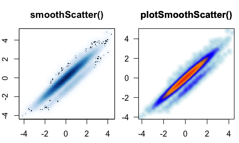

The goal of jamba is to provide useful custom functions for R data analysis and visualization. jamba version 1.0.2
Package Reference
A full online function reference is available via the pkgdown documentation:
Functions are categorized, some examples are listed below:
Installation
Production will soon be available from CRAN:
install.packages("jamba")
The development version can be installed:
remotes::install_github("jmw86069/jamba")
Additional R Packages in “Suggests”
-
crayon- install withinstall.packages("crayon")for glorious colored console output. Color makes it better. -
farver- install withinstall.packages("farver")for more efficient color manipulations, and HSL color coneversions.
Additional R Packages in “Enhances”
Bioconductor packages are invaluable for bioinformatics work, but can be a bit “heavy” to install if not absolutely necessary. Therefore, Bioconductor packages are in “Enhances” so they require someone to make the choice to install them.
-
S4Vectors- install withBiocManager::install("S4vectors")to improve speed ofcPaste()functions. -
openxlsx- install withinstall.packages("openxlsx")to support Excelxlsxfile import, and stylized export. -
kableExtra- install withinstall.packages("kableExtra")to enable colorized kable HTML tables in RMarkdown documents. -
ComplexHeatmap- install withBiocManager::install("ComplexHeatmap")to use withheatmap_row_order(),cell_fun_label()for custom labels. -
matrixStats- install withinstall.packages("matrixStats")for efficientnumericstats calculations, orsparseMatrixStatsfor use with Matrix sparse matrices as used with Seurat and SingleCellExperiment data. -
ggridges- install withinstall.packages("ggridges")for convenient ridge density plots usingplotRidges().
Background
The R functions in jamba have been built up, used, tested, revised over several years. They are immediately useful for day-to-day work, and efficient and robust enough for production pipelines.
Many were inspired by discussion from Stackoverflow, R-help, or Bioconductor, with citations thanking principal author(s). Many thanks to the original authors! The R community is built upon the collective greatness of its contributors!
Most of the functions are designed around workflows for Bioinformatics analyses, where functions need to be efficient when operating over 10,000 to 100,000 elements. (They work quite well with millions as well.) Usually the speed gains are obvious with about 100 elements, then scale linearly (or worse) as the number increases. I and others use these functions all the time.
One example function writeOpenxlsx() is a simple wrapper around very useful openxlsx::write.xlsx(), which also applies column formatting for column types: P-values, fold changes, log2 fold changes, numeric, and integer values. Columns use conditional Excel formatting to apply color-shading to cells for each type.
Similarly, readOpenxlsx() is a wrapper function to openxlsx::read.xlsx() which reads each worksheet and returns a list of data.frame objects. It can detect multi-row column headers, for which it returns combined column names. It also applies equivalent of check.names=FALSE so column names are returned without change.
Small and large efficiencies are used wherever possible. The mixedSort() functions are based upon gtools::mixedsort(), with additional optimizations for speed and custom needs. It sorts chromosome names, gene names, micro-RNA names, etc.
Alphanumeric sort
-
mixedSort()- highly efficient alphanumeric sort, for example chr1, chr2, chr3, chr10, etc. -
mixedSortDF()- as above, applied to columns in adata.frame(ormatrix,tibble,DataFrame, etc.) -
mixedSorts()- as above, applied to a list of vectors with no speed loss.
Example:
| miRNA | sort_rank | mixedSort_rank | |
|---|---|---|---|
| 2 | ABCA2 | 2 | 1 |
| 1 | ABCA12 | 1 | 2 |
| 3 | miR-1 | 3 | 3 |
| 6 | miR-1a | 6 | 4 |
| 7 | miR-1b | 7 | 5 |
| 8 | miR-2 | 8 | 6 |
| 4 | miR-12 | 4 | 7 |
| 9 | miR-22 | 9 | 8 |
| 5 | miR-122 | 5 | 9 |
Base R plotting
These functions help with base R plots, in all those little cases when the amazing ggplot2 package is not a smooth fit.
-
nullPlot()- convenient “blank” base R plot, optionally displays margins -
plotSmoothScatter()- smooth scatterplot()for point density, enhanced oversmoothScatter() -
plotPolygonDensity()- fast density/histogram plot for vector or matrix
-
imageDefault()- enhancedimage()that enables raster output with consistent pixel aspect ratio. -
imageByColors()- wrapper toimage()for a matrix or data.frame of colors, with optional labels
-
minorLogTicksAxis(),logFoldAxis(),pvalueAxis()- log axis tick marks and labels, compatible withoffsetfor examplelog(offset + x). -
sqrtAxis()- draw a square-root transformed axis, with proper labels. -
drawLabels()- draw square colorized text labels -
shadowText()- replacement fortext()that draws shadows or outlines. -
groupedAxis()- grouped axis labels to show regions/ranges -
decideMfrow()- determine appropriate value forpar("mfrow")for multipanel output in base R plotting. -
getPlotAspect()- determine visible plot aspect ratio.
Excel export
Every Bioinformatician/statistician needs to write data to Excel, the writeOpenxlsx() function is consistent and makes it look pretty. You can save numerous worksheets in a single Excel file, without having to go back and custom-format everything.
-
writeOpenxlsx()- flexible Excel exporter, with categorical and conditional colors. -
applyXlsxCategoricalFormat()- apply categorical colors to Excel -
applyXlsxConditionalFormat()- apply conditional colors to Excel
Colors
Almost everything uses color somewhere, especially on R console, and in every R plot.
-
getColorRamp()- retrieve or create color palettes -
setTextContrastColor()- find contrasting font color for colored background -
makeColorDarker()- make a color darker (or lighter, or saturated) -
color2gradient()- split one color to a gradient ofncolors -
showColors()- display a vector orlistof colors -
rainbow2()- enhancesrainbow()categorical colors for visual contrast. -
warpRamp()- “bend” a color gradient to enhance the visual range -
fixYellow()- opinionated reduction of yellow-green hue -
printDebug()- colorized text output to console or RMarkdown -
printDebugHtml()- colorized HTML output in RMarkdown or web pages -
kable_coloring()- coloredkableExtra::kable()RMarkdown tables, ifkableExtrapackage is installed. -
col2alpha(),alpha2col()- get or set alpha transparency -
col2hcl(),col2hsl(),col2hsv(),hcl2col(),hsl2col(),hsv2col(),rgb2col()- consistent color conversions. -
color_dither()- split color into two to make color stripes

List Functions
Efficient methods to operate on lists in one call, to avoid looping through the list either with for() loops, lapply() or map() functions. Driven by speed with 10k-100k rows, typical biological datasets.
Compared to convenient alternatives, apply() or tidyverse, typically order of magnitude faster. (Ymmv.) Notable exceptions: data.table and Bioconductor S4Vectors. Both are amazing, and are fairly heavy installations. S4Vectors is used when available.
-
cPaste()-paste(..., collapse)a list of vectors -
cPasteS()-cPaste()withmixedSort() -
cPasteU()-cPaste()withunique()(actuallyuniques()) -
cPasteSU()-cPaste()withmixedSort()andunique() -
uniques()-unique()across a list of vectors -
sclass()-class()a list -
sdim()-dim()across a list, or S4 object, or non-list object -
ssdim()-sdim()across a list -
sdima()-sdim()forattributes() -
rbindList()-do.call(rbind, ...)to bind rows into amatrixordata.frame, useful together withstrsplit(). -
mergeAllXY()-merge(..., all.x=TRUE, all.y=TRUE)a list ofdata.frame -
rmNULL()- remove NULL from a list, with optional replacement -
rmNAs()-rmNA()across a list, with option replacement(s) -
showColors()- display colors -
heads()-head()across a list
Unique names with versions
R object names provide an additional method to confirm data are kept in the proper order. Duplicated names may be silently ignored, which motivated the easy approach to “make unique names”.
-
makeNames()- make unique names, with flexible rules -
nameVector()- add unique names usingmakeNames() -
nameVectorN()- make vector of names, named withmakeNames(). Useful insidelapply()which returns names but only when provided.
data.frame/matrix/tibble
-
mixedSortDF()-mixedSort()by columns or rownames -
pasteByRow()- fast row-paste with delimiters, default skips blanks -
pasteByRowOrdered()- nifty alternative that honors factor levels -
rowGroupMeans(),rowRmMadOutliers()- grouped row functions -
mergeAllXY()- merge a list ofdata.frameinto one, keeping all rows -
renameColumn()- rename columnsfromandto. -
kable_coloring()- flexible colorizeddata.frameoutput in Rmarkdown.
String / grep
-
tcount()-table()sorted high-to-low, with minimum count filter -
middle()- shownentries from start, middle, then end. -
gsubOrdered()-gsub()that returns ordered factor, inherits existing -
gsubs()-gsub()a vector of patterns/replacements. -
grepls()- grep the environment object names, including attached packages -
vgrep(),vigrep()- value-grep shortcut -
unvgrep(),unvigrep()- un-grep, remove matched results -
provigrep()- progressive grep, returns matches in order of patterns -
igrepHas()- case-insensitive grep-any -
ucfirst()- upper-case the first letter of each word. -
padString(),padInteger()- produce strings from numeric values with consistent leading zeros.
Numeric
-
formatInt()- opinionatedformat()for integers. -
normScale()- scale between 0 and 1 or custom range -
noiseFloor()- apply noise floor, ceiling, with flexible replacements -
log2signed(),exp2signed()- log2 with offset, and reciprocal -
rowGroupMeans(),rowRmMadOutliers()- efficient grouped row functions -
deg2rad(),rad2deg()- interconvert degrees and radians -
rmNA()- remove NA values, with optional replacement -
warpAroundZero()- warp a numeric vector symmetrically around zero -
rmInfinite()- remove infinite values, with optional replacement. -
formatInt()- convenientformat()for integer output, with comma-delimiter by default
Common usage
- convert zero to NA:
noiseFloor(0:10, minimum=1e-20, newValue=NA)
#> [1] NA 1 2 3 4 5 6 7 8 9 10- convert values below floor to floor:
noiseFloor(0:10, minimum=3)
#> [1] 3 3 3 3 4 5 6 7 8 9 10- convert values below floor or NA to floor:
noiseFloor(c(0:10, NA), minimum=3, adjustNA=TRUE)
#> [1] 3 3 3 3 4 5 6 7 8 9 10 3Practical / helpful
-
jargs()- pretty function arguments, optional pattern search argument name
jargs(plotSmoothScatter)
#> x = ,
#> y = NULL,
#> bwpi = 50,
#> binpi = 50,
#> bandwidthN = NULL,
#> nbin = NULL,
#> expand = c(0.04, 0.04),
#> transFactor = 0.25,
#> transformation = function( x ) x^transFactor,
#> xlim = NULL,
#> ylim = NULL,
#> xlab = NULL,
#> ylab = NULL,
#> nrpoints = 0,
#> colramp = c("white", "lightblue", "blue", "orange", "orangered2"),
#> col = "black",
#> doTest = FALSE,
#> fillBackground = TRUE,
#> naAction = c("remove", "floor0", "floor1"),
#> xaxt = "s",
#> yaxt = "s",
#> add = FALSE,
#> asp = NULL,
#> applyRangeCeiling = TRUE,
#> useRaster = TRUE,
#> verbose = FALSE,
#> ... =-
sdim(),ssdim()- dimensions of list objects, or nested list of lists -
sdima()- runssdim()on the attributes of an object. -
isTRUEV(),isFALSEV()- vectorized test for TRUE or FALSE values, sinceisTRUE()only operates on single values, and does not allowNA. -
reload_rmarkdown_cache()- load RMarkdown cache folder into environment -
call_fn_ellipsis()- for developers, call child function while passing only acceptable arguments in.... Instead of:something(x, ...), use:call_fn_ellipsis(something, x, ...)and never worry about.... -
log2signed(),exp2signed()- convenientlog2(1 + x)or its reciprocal, using customizable offset. -
newestFile()- most recently modified file from a vector of files
R console
-
jargs()- Jam argument list - see “Practical” above for example -
lldf()-ls()withobject.size()intodata.frame -
middle()- Similar tohead()andtail(),middle()showsnentries from beginning, middle, to end. -
printDebug()- colorized text output -
setPrompt()- colorized R console prompt with project name and R version
RMarkdown
reload_rmarkdown_cache()- when rendering RMarkdown withcache=TRUE, this function reads the cache to reload the environment without re-processing, to recover the exact result for continued work.-
printDebugHtml()- colored HTML output.- Shortcut for
printDebug(..., htmlOut=TRUE, comments=FALSE), oroptions("jam.htmlOut"=TRUE, "jam.comment"=FALSE). - The RMarkdown chunk must include:
results='asis'
- Shortcut for
printDebugHtml("printDebugHtml(): ",
"Output is colorized: ",
head(LETTERS, 8))(12:05:41) 07Mar2025: printDebugHtml(): Output is colorized: A,B,C,D,E,F,G,H
withr::with_options(list(jam.htmlOut=TRUE, jam.comment=FALSE), {
printDebugHtml(c("printDebug() using withr::with_options(): "),
c("Output should be colorized: "),
head(LETTERS, 8));
})(12:05:41) 07Mar2025: printDebug() using withr::with_options(): Output should be colorized: A,B,C,D,E,F,G,H
-
kable_coloring()- applies categorical colors tokable()output usingkableExtra::kable().- It also applies a contrasting text color.
- Unfortunately, the HTML output is not compatible with this page on Github, see package function docs in RStudio.
expt_df <- data.frame(
Sample_ID="",
Treatment=rep(c("Vehicle", "Dex"), each=6),
Genotype=rep(c("Wildtype", "Knockout"), each=3),
Rep=paste0("rep", c(1:3)))
expt_df$Sample_ID <- pasteByRow(expt_df[, 2:4])
# define colors
colorSub <- c(Vehicle="palegoldenrod",
Dex="navy",
Wildtype="gold",
Knockout="firebrick",
nameVector(color2gradient("grey48", n=3, dex=10), rep("rep", 3), suffix=""),
nameVector(
color2gradient(n=3,
c("goldenrod1", "indianred3", "royalblue3", "darkorchid4")),
expt_df$Sample_ID))
kbl <- kable_coloring(
expt_df,
caption="Experiment design table showing categorical color assignment.",
colorSub)Other related Jam packages
Jam Github R packages are being transitioned to CRAN/Bioconductor:
-
venndir: Venn diagrams with direction, designed for published figures. -
multienrichjam: Multi-enrichment pathway analysis and visualization tools. -
splicejam: Sashimi plots for RNA-seq coverage and junction data. -
jamma: MA-plots as a unified data signal quality control toolset. -
colorjam:rainbowJam(), Categorical colors with improved visual contrast. -
genejam: Fast, structured approach to gene symbol integration. -
platjam: Platform specific functions: Nanostring, Salmon, Proteomics, Lipidomics; NGS coverage heatmaps. -
jamses:heatmap_se()friendly wrapper for ComplexHeatmap; other integrated methods for factor-aware design/contrasts, normalization, contrasts, heatmaps. -
jamsession: properly save/load R objects, R sessions, R functions.